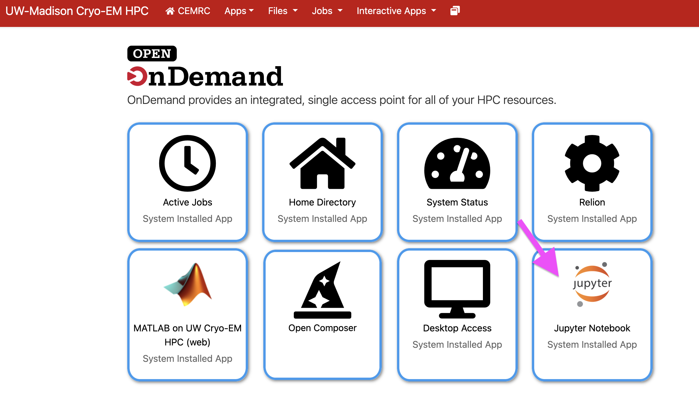
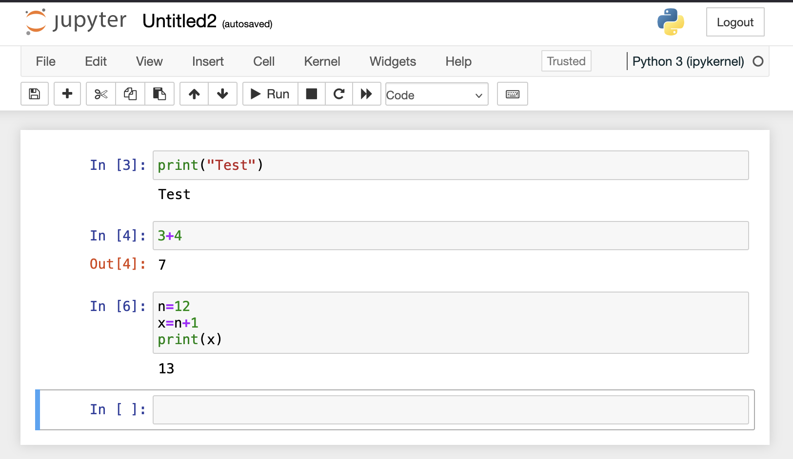

Jupyter Notebook
Jupyter Notebook is an application users can use to quickly test and run code for many applications. It supports multiple programming languages and the files are compatible with many systems.
You can open the Jupyter application from the icon on the Open Ondemand dashboard. You can also select the applicatiion from the Apps or Interactive Apps dropdown at the top of the dashboard.
{kind=link}
When you open Jupyter Notebook you will be presented with your home directory. To start a new notebook click the New dropdown near the top right of the screen. Then select the type of notebook you’d like to start. We currently support Python 3 notebooks. If you’d like another supported language installed, please contact Jennifer at jfscheuren@wisc.edu. The list of supported languages is here: Supported kernels.
A new untitled notebook will be started. You can change the notebook name by clicking the name at the top of the page. This will bring up a modal for changing the notebook name. To start using the notebook, click in the first cell and type your code. To run your code press Shift + Enter or click the play button on the top menu bar.
Examples:
{kind=link}
To save your notebook click the save icon near the top of the screen or choose “Save and checkpoint” under the file menu. Your notebook will be saved as an ipynb file that can be shared with others.
For more information about using Jupyter notebook, see the link below. Official Jupyter documentation.